Focus
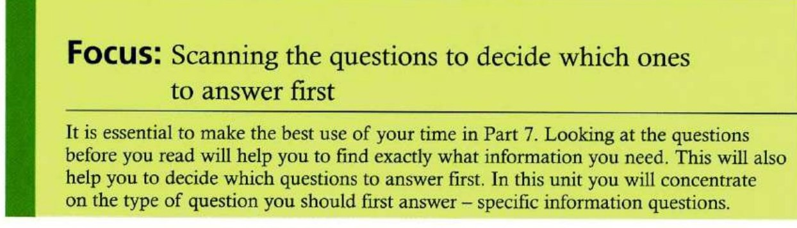
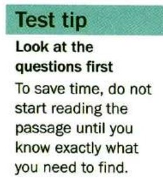
![1. Specific information (positive). These are the easiest and quickest to find the answer for. Do these first. Examples: According to the author, who will use x? Where did x come from? Who will benefit from this change? 2. Vocabulary questions (see Unit 14). These should be answered quickly. If you don't know the word or words, guess and move on. Example: The word x in paragraph 1 line 3 is closest in meaning to … 3. Main idea slash inference questions (see Unit 14). Doing the previous question types first will help prepare you for these. Examples: What is the purpose of this memo? Why is Mr. Jones writing this letter? What can be said or inferred about …? Who might read this advertisement? 4. Specific information (negative) (see Unit 21). These can be the most time-consuming. Leave them till last, when you may have already got information to help you with the answers. Examples: Which of the following is NOT true? Which of the following positions is NOT available?](img/u07/tt1-types.jpg)
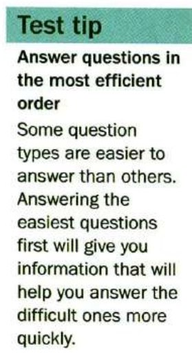
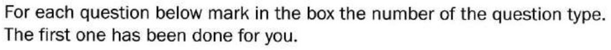
Question 1 is done for you — it is a main idea question, type 3. Mark the type for the other five.
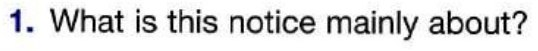
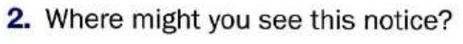
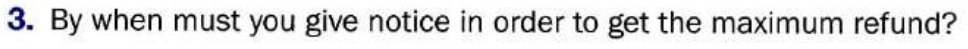
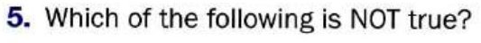
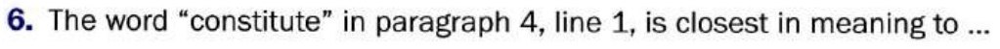
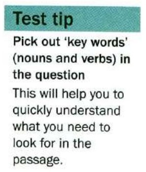
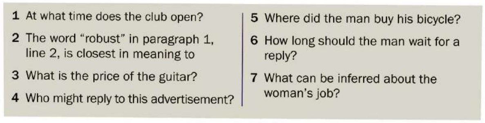
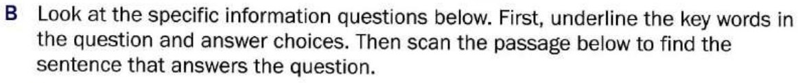
![Summer program refund policy. The effective date of the withdrawal or cancellation is the date the withdrawal notice is received by the center, regardless of the date the participant stopped attending the class. Withdrawal requests from all registered courses must be made before the second class is held. If the request is received 5 business days prior to the first class, the amount refunded will be the full amount, less the refund administration fee of 25 dollars. If the request is received after the first class, but before the second class, the amount refunded will be the full amount, less the cost of the first class and less the admin fee of 25 dollars. From the second lesson onwards, no refunds or credits will be issued. If there is a medical reason for the request, it must be received prior to the mid-point of the program. Refunds for sports and fitness programs will NOT be processed until ALL gym and pool passes have been returned. Please note that advising an instructor or not attending a program will not constitute a notice of withdrawal. Cash or check remittances will be refunded by check. Please allow our office 4 to 6 weeks to process your refund. Credit card refunds will go back on the original card.](img/u07/refund.jpg)
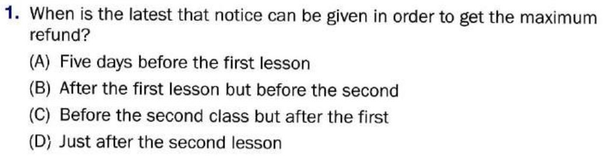
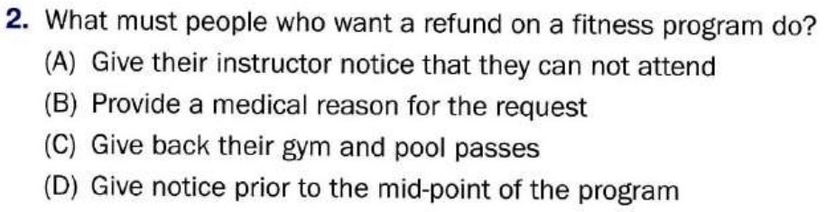
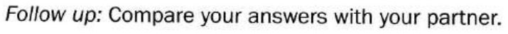
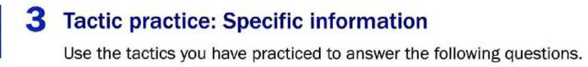
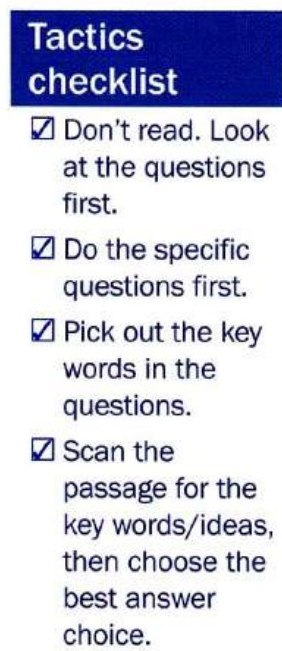
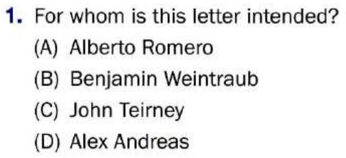
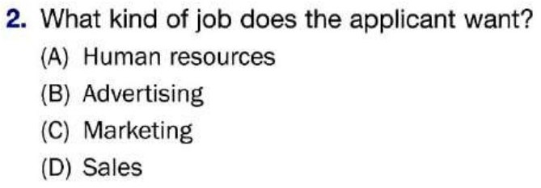
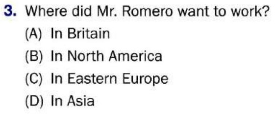
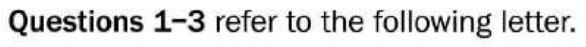
![Letter to Alberto Romero, 3254 Turney Road, Garfield Heights, OH 44125, USA. Dear Mr. Romero, This letter is to thank you for your application to join our international sales team. Unfortunately, we must inform you that due to the large number of highly-qualified applicants that applied for the position of Eastern European sales representative, we have already filled all the positions that were advertised in the May issue of the Human Resources Bulletin. As you know, administrative and marketing positions in our European and Asia-Pacific offices regularly become available during the year and we would welcome your application for future international postings. Yours truly, Alex Andreas, p.p. Benjamin Weintraub, Human Resources Manager, London Office, John Teirney and Sons Ltd.](img/u07/letter.jpg)
Mini-test
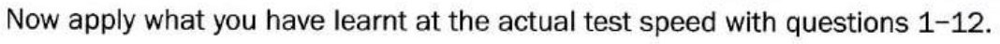
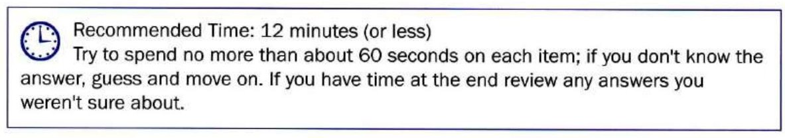
Nothing stops when the clock hits zero and nothing is lost — it is there to build the habit of moving on.
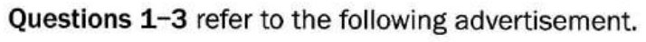
![Advertisement. Printing for your personal and small business needs. Gaines Bros Printing. A commitment to quality and service since 1959. New opening hours: Monday to Saturday from 9 a.m. to 7 p.m. Services: Business Forms, Business Cards, Envelopes, Folders, Letterhead, Menus, Full Color Printing, Graphic Design, Digital Copying, Invitations, Graduation and Wedding Announcements. June-only special offers: Order 10 sets of letterhead and get matching envelopes at a 50 percent discount. Place an order worth over 100 dollars and receive 2 business cards or invitations for the price of 1. Make a purchase over 250 dollars and you will receive a voucher worth 10 percent off your next order during the coming year. Order by phone, fax or in person. 555-3467, FAX 555-3478. 458 Notting Drive Unit 119, Alansburg.](img/u07/ad.jpg)
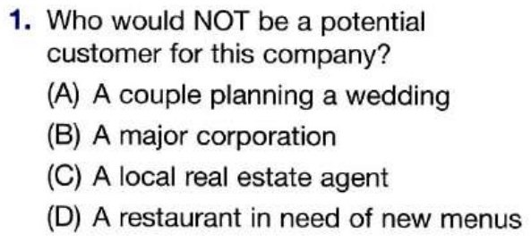
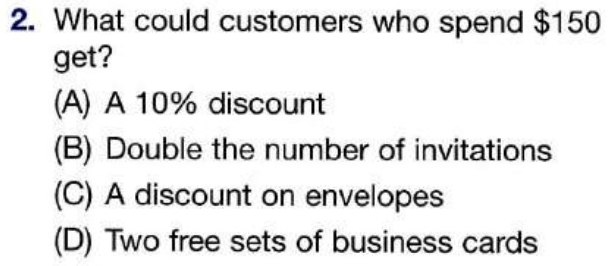
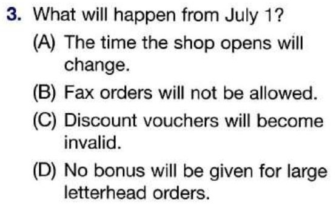
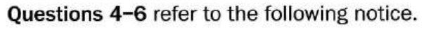
![Welcome to the Groveland library service. We would like to invite all Groveland residents to become members of the public library system. Interested applicants should follow the procedure below to receive their library card promptly and make use of the full range of facilities. Please complete the accompanying personal information form and submit it to the applications desk in any of the Groveland branch libraries or to your local ward office community service desk. Within two working days, Monday to Friday, of the application being submitted: You will receive a library barcode number via e-mail, enabling you to place reservations and access online databases before collecting your card. Note: You will require a PIN to place reservations and to access your record online. Please note that the default PIN number is the last four digits of your telephone number. If you would prefer to specify a different number please do so on the application form. Your card will be available for collection at the branch library you have nominated. If you are under the age of 18, we require a parent or guardian's signature on a permission letter, Form 103, which will need to be brought into the library when you are collecting your card.](img/u07/notice1.jpg)
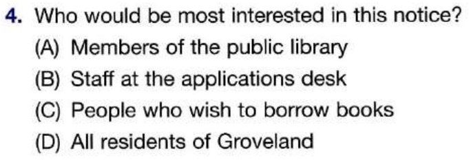
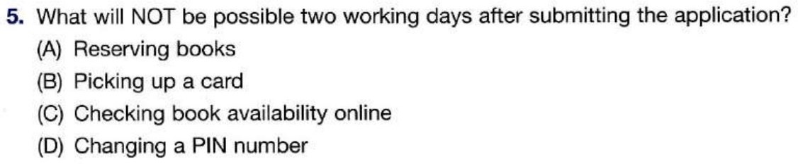
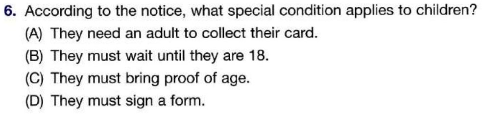
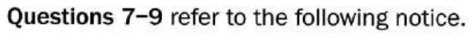
![Online water slash sewer payment. Welcome to the Worthwood Water and Sewer Account Payment System. You can now pay your bill online via credit card using the most secure online payment system available. Please enter your Worthwood Water and Sewer account number below, then click Submit. Your account number can be found in the upper left-hand corner of your bill. If you do not know your account number, please call 555-8375. If your door has been tagged for non-payment, you must call 555-0874 to stop termination of water service. Please do not use this Web site if your payment is intended for overdue sewer charges related to sewer certification. If you recently received a notice about unpaid sewer charges, please follow the payment instructions on the notice. Sewer payments can be mailed to Division of Water, P.O. Box 139012, Worthwood, South Dakota 57248. Payments must be received by Feb 16. A two dollar or two percent processing fee, whichever is GREATER, will be added to your payment. All general inquiries should be addressed to the Information Section, Worthwood Public Works Section, P.O. Box 138976, Worthwood, South Dakota 57248, or call 555-2378 extension 124.](img/u07/notice2.jpg)
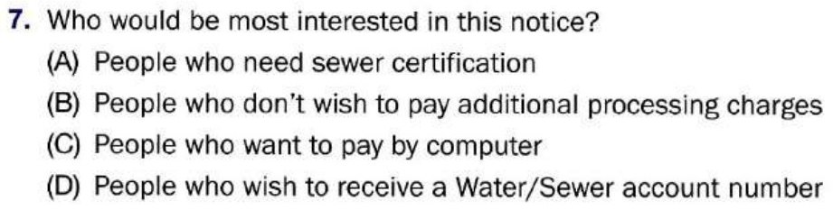
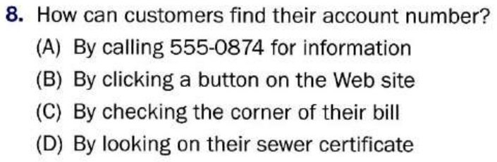
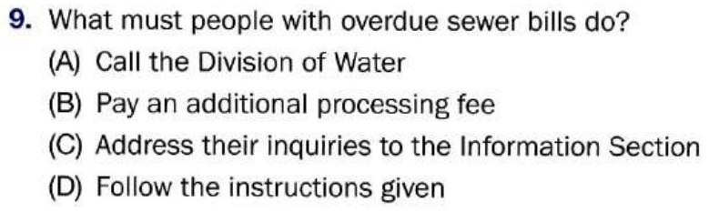
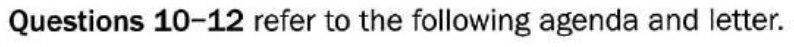
![Walken Student Empowerment Conference, Schedule of Events. Thursday, November 10. 2:00 p.m. Open Registration, Walken University Park. 3:30 p.m. Welcome and Introductions by Dean Alison Murret, Griffen Hall. 4:15 p.m. First speaker: Harry Lothian, St. Exupery Auditorium, Chair of Economics, Senior Student Advisor, Transition from lecture hall to boardroom. 5:00 p.m. Main speaker: Horst Van Buren, St. Exupery Auditorium, Chairman of Alliance Department Stores, Making your way in the real world, struggles and successes. 6:00 p.m. Reception with Horst Van Buren, Vimy Atrium. 7:00 p.m. Dinner at the Brownville Inn.](img/u07/agenda.jpg)
![Dear Mr. Van Buren, I would like to take this opportunity to thank you for the very interesting and motivational talk at our conference last Thursday. I am sure the students found it particularly inspirational as they prepare to make their way in the working world. Thank you also for the generous award donation that you made and for agreeing to present the grand prize during the reception after your talk. I am sure I speak for the rest of the faculty and the student council when I say we would be honored if you would consider speaking at future conferences. With sincerest appreciation and best wishes, Yours, Alison Murret.](img/u07/letter2.jpg)
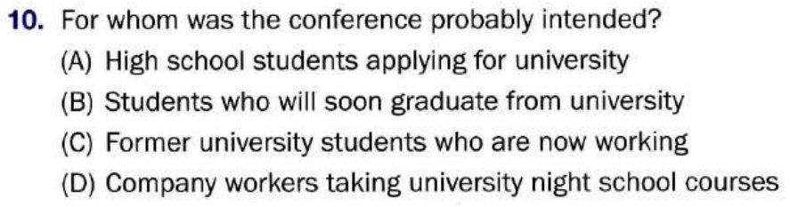
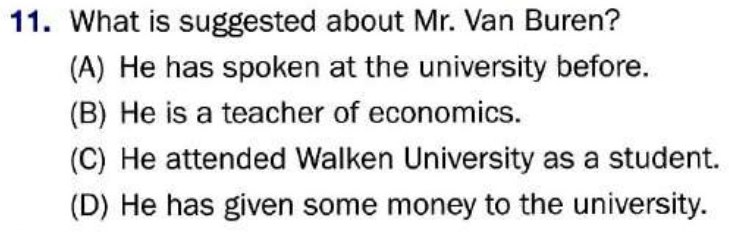
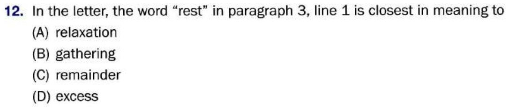
Reading in action
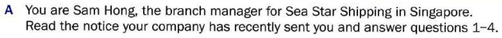
![Notice. Recent weather conditions have caused delays of up to three days in some of our shipping contracts. Because of this, we anticipate complaints about late delivery from our customers. Our official policy is that we are not responsible for any costs resulting from failure to meet delivery schedules due to bad weather. This is clearly stated in all our shipping contracts. To assist customers with especially time-sensitive deliveries, we can offer a special 50 percent discount on Express air freight costs. Especially valued customers may be offered a 15 percent discount on their next order.](img/u07/ria-notice.jpg)
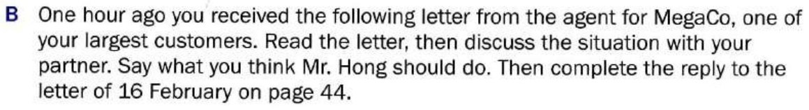
![16 February. Mr. Hong, We were informed that the heavy seas have delayed the delivery of product shipment SD1278 to San Francisco by an estimated three days. This is an extremely time-sensitive shipment for our customer, and because of this we will have to pay late penalties of approximately 7,500 dollars per day. I am writing to inform you that we hold you responsible for these and any additional fees resulting from your failure to deliver as per our shipping contract. I look forward to hearing from you soon. Martha Rogers.](img/u07/ria-letter.jpg)
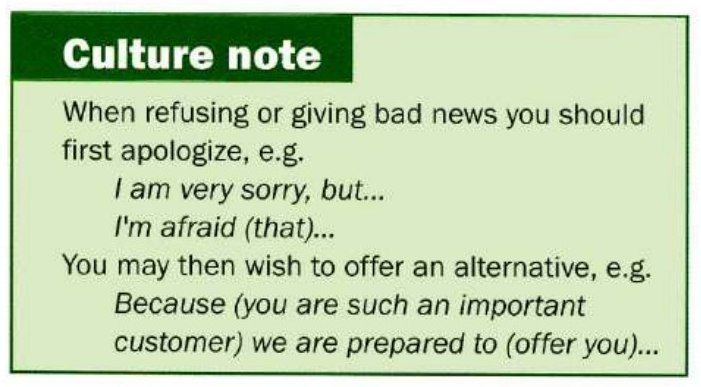
![Dear Ms Rogers, We received your letter of 16 February concerning consignment number blank 1. We are very sorry for the unfortunate delays to your shipment, but I am afraid that we are not responsible for any blank 2 due to blank 3. This is clearly stated in your blank 4. As you are a valued customer, however, we would like to assist you as much as possible in making the delivery to blank 5 on time. We are prepared to offer you a special blank 6. In addition to this we will give you a blank 7 off the costs of your next order. Please let us know as soon as possible about your intentions. Yours sincerely, Sam Hong.](img/u07/reply.jpg)
Further study
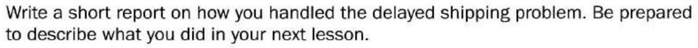
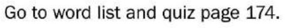
Vocabulary practice
The 34 words behind this unit, drilled four ways — meaning, context, speed, then spelling. Anything you get wrong comes straight back before the round ends, and the game keeps asking about your weakest words. Replay it as often as you like.